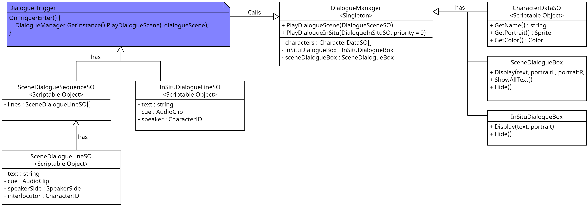
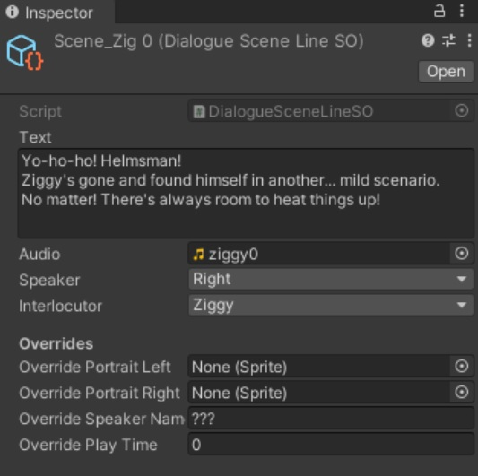

Charry's Passage: Wake of Souls
Dialogue System
he dialogue system was designed in close collaboration with the design and narrative team to make sure it could do what we wanted and was easy to work with. The dialogue system has two types of dialogue:
A central dialogue manager can be called from anywhere to play dialogue. This class is instantiated in a bootstrap scene so it is always available.
We used scriptable objects to make it easy for the narrative team to build dialogue sequences and add audio files to the appropriate dialogue lines. The game features fully voiced dialogue, so it was important to have a good way to link the text and audio files together.
We have a small set of characters that have some character data associated with them (portrait, name and color). Using an enum the designers could easily choose a character for a dialogue line from a drop-down menu.
Here is a code snippet that shows how playing a dialogue scene worked in the DialogueManager:/// <summary> /// Play a dialogue scene composed of a sequence of dialogue lines. /// </summary> /// <param name="lines"> The dialogue lines containing the text and other information. </param> public void PlayDialogueScene(SceneDialogueSequenceSO lines) { #if UNITY_EDITOR if (DialogueDisabler.GetIsDialogueDisabled()) { return; } #endif _previous = GameStateManager.Instance.CurrentGameState; GameStateManager.Instance.SetState(GameState.InCutscene); // Interrupt other dialogue if necessary if (_isPlayingDialogueInSitu) { _audioSource.Stop(); _dialogueInSituBox.Hide(); _isPlayingDialogueInSitu = false; StopAllCoroutines(); } _curSceneLines = lines; // This enumerator is used in ShowAllOrNext to iterate through all the lines. _sceneLineEnumerator = ((IEnumerable<SceneDialogueLineSO>)_curSceneLines).GetEnumerator(); if (_sceneLineEnumerator.MoveNext()) { PlayLine(_sceneLineEnumerator.Current); } } private void PlayLine(SceneDialogueLineSO line) { _isPlayingDialogueScene = true; _dialogueSceneBox.Display( line.GetText(), line.GetSpeaker(), line.GetSpeakerName(), GetPortrait(line, SpeakerSide.Left), GetPortrait(line, SpeakerSide.Right), line.GetSpeakerColor()); AudioClip audioClip = line.GetAudio(); if (audioClip) { _audioSource.PlayOneShot(line.GetAudio()); } } private void ShowAllOrNext() { if (!_isPlayingDialogueScene) { return; } if (_dialogueSceneBox.GetIsRollingText()) { _dialogueSceneBox.ShowAllText(); } else { if (_sceneLineEnumerator != null && _sceneLineEnumerator.MoveNext()) { _audioSource.Stop(); PlayLine(_sceneLineEnumerator.Current); } else { _dialogueSceneBox.Hide(); _audioSource.Stop(); _isPlayingDialogueScene = false; GameStateManager.Instance.SetState(_previous); } } }
Tech Art
We wanted to achieve a visual style that was distinct, but still heavily inspired by Hades (Supergiant Games, 2020). I worked closely with our 2D artist and art director to bring their vision to life in the game.
I made a structure for setting up the game world with parallax scrolling, 2D lighting and post-processing effects.
For the river I created a shader in Unity's shader graph that uses voronoi cells to create the wave highlights, gradient noise is used to offset the uv sampling which distorts the cells to create a wave-like effect. An important consideration was that we wanted to have many different rivers, so I added parameters to easily tweak the way the river looked and how it moved.


To combine 2D and 3D assets in the best way possible and use a single render pipeline and make use of powerful 2D lighting, the 3D assets are pre-rendered to 2D frame animations. I made the character in Blender following our artist's concept art, animated it and exported it into 2D frames. To make the boat and the oar look submerged in the river, I added a plane with a transparency mask so that fragments that go into it are not rendered.

Tech Lead
Some of the tasks I did as tech lead were: